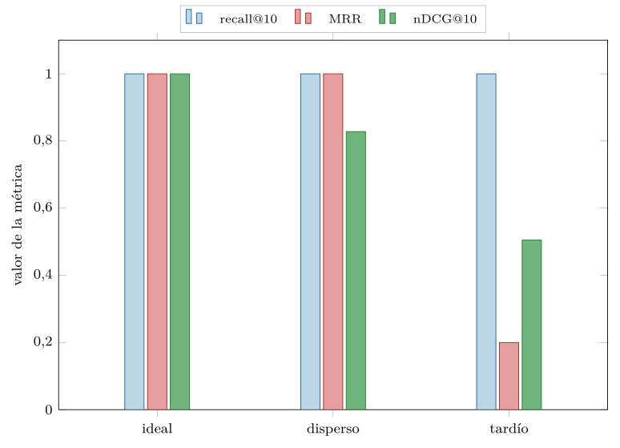
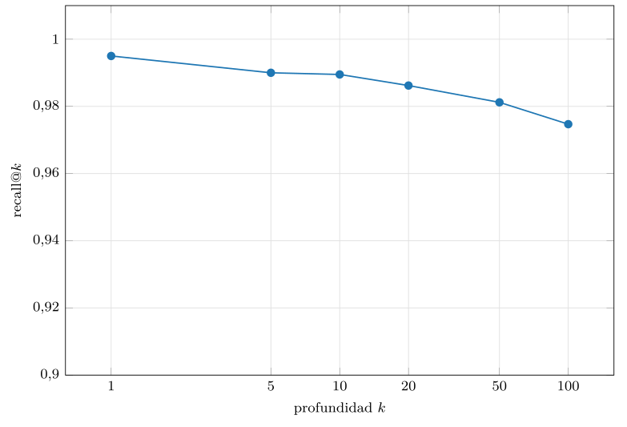
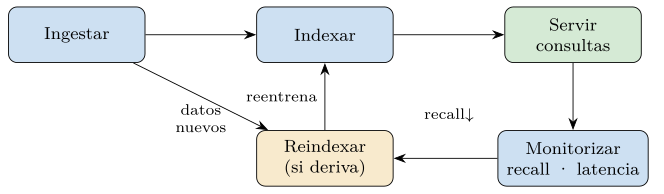
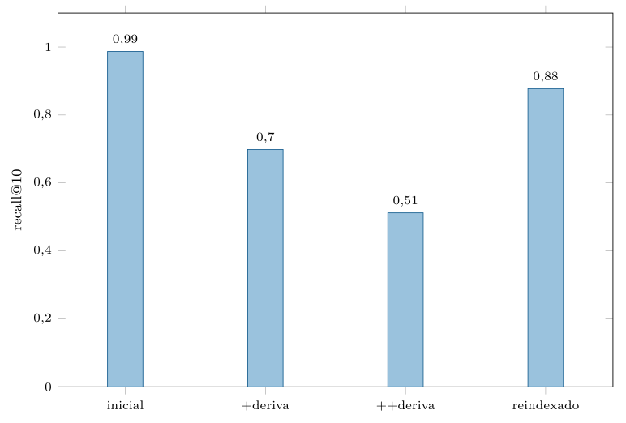
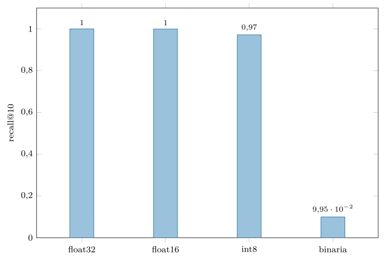
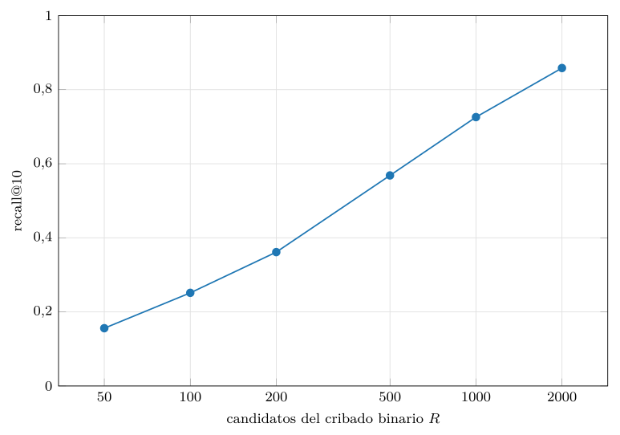

Capítulo 18. Evaluación y operación
Llegamos al final del viaje. Los capítulos anteriores construyeron, pieza a pieza, un sistema de búsqueda vectorial completo: la geometría que define el parecido, la anatomía del almacén, los índices que escalan la búsqueda, los motores que los encarnan y la consulta híbrida que combina las señales. Queda una pregunta que ha estado implícita en cada decisión y que este capítulo, el último, formaliza: ¿cómo sabemos que el sistema funciona, y cómo lo mantenemos funcionando? Esas son las dos caras del cierre —la evaluación y la operación—, y son las que separan un experimento que impresiona en la demostración de un sistema en el que se puede confiar día tras día.
La tesis del capítulo es sencilla y severa: un sistema que no se sabe medir es un sistema en el que no se puede confiar. Toda la maquinaria que hemos levantado —del vector al índice, del motor a la consulta híbrida— solo vale lo que vale nuestra capacidad de demostrar, con números, que recupera lo que debe, con la rapidez que se necesita y al coste que se puede pagar. Y como los datos cambian, los modelos envejecen y el tráfico crece, esa demostración no se hace una vez, sino continuamente: evaluar y operar son actividades permanentes, no hitos que se tachan de una lista.
El capítulo recorre, primero, las métricas de calidad —recall@k, MRR, nDCG—, que ponen número a lo bien que se recupera; luego la eficiencia —latencia, rendimiento, huella en memoria— y los bancos de prueba que la miden con rigor; después la operación —la ingesta a escala, la deriva de los datos y el reindexado—; y por último la cuantización en producción, la palanca que reconcilia el coste con la calidad. Todo, como en todo el libro, medido: el módulo de la práctica calcula las métricas, compara las representaciones numéricas, mide la latencia y reproduce la degradación por deriva y su recuperación al reindexar, con datos reales en una CPU normal. Es el cierre coherente de una obra que ha insistido, capítulo tras capítulo, en una sola disciplina: no suponer, medir.
Las métricas de calidad
Para saber si un sistema recupera bien hace falta una vara, y la recuperación de información ha decantado varias, cada una con su sesgo. La más intuitiva es el recall@k: de los documentos relevantes para una consulta, qué fracción aparece entre los \(k\) primeros resultados. Mide exhaustividad —¿están los buenos?— y es la métrica natural de la primera etapa de recuperación, donde lo que importa es no dejarse nada. Su pareja es la precisión@k: de los \(k\) devueltos, qué fracción son relevantes; mide cuánto ruido acompaña a la señal.
Pero el recall y la precisión ignoran algo crucial: el orden. Al usuario no le da igual encontrar el documento relevante en el puesto uno o en el diez, y dos sistemas con el mismo recall@10 pueden ofrecer experiencias muy distintas. La práctica lo deja meridiano (figura 18.1): tres rankings con los mismos documentos relevantes, colocados en posiciones distintas, tienen idéntico recall@10 —\(1{,}0\), los tres están entre los diez— pero MRR y nDCG muy diferentes. Cuando los relevantes están arriba, todas las métricas valen uno; cuando están dispersos, el nDCG baja a \(0{,}83\); cuando están al final, el MRR cae a \(0{,}2\) y el nDCG a \(0{,}51\). El recall no distingue estos casos; las métricas sensibles al rango, sí.

src/cap18_evaluacion.py.El MRR (mean reciprocal rank) mira el primer acierto: es \(1/\text{posición}\) del primer relevante, promediado sobre las consultas, e ideal cuando se busca un documento concreto. El nDCG (normalized discounted cumulative gain) es la medida más completa (Järvelin y Kekäläinen 2002): suma la relevancia de cada resultado descontada por el logaritmo de su posición —un acierto arriba vale más que uno abajo— y la normaliza contra el orden ideal, de modo que vale uno solo si el orden es perfecto. Es la referencia cuando hay grados de relevancia y el orden completo del top importa. La lección de tener varias métricas es que cada una cuenta una historia —el recall dice «están todos», el MRR «el primero acierta», el nDCG «el orden es bueno»— y elegir la métrica es elegir qué historia importa en el caso.
Conviene ver el nDCG con números, porque su fórmula intimida más de lo que merece. Tomemos el ranking disperso, con los tres relevantes en las posiciones 1, 4 y 7 de diez. La ganancia descontada (DCG) suma, por cada relevante, \(1/\log_2(\text{posición}+1)\): \(1/\log_2 2 + 1/\log_2 5 + 1/\log_2 8 = 1{,}0 + 0{,}431 + 0{,}333 = 1{,}764\). El orden ideal pondría los tres en las posiciones 1, 2, 3, con DCG ideal \(1/\log_2 2 + 1/\log_2 3 + 1/\log_2 4 = 1{,}0 + 0{,}631 + 0{,}5 = 2{,}131\). El nDCG es el cociente, \(1{,}764/2{,}131 \approx 0{,}83\): el ranking es bueno —los tres relevantes están— pero no perfecto, porque dos de ellos podrían estar más arriba. Ese \(0{,}83\), frente al \(1{,}0\) del recall, es exactamente lo que el recall no veía: que el orden, aun teniendo todos los relevantes, era mejorable.
El recall depende de cuán profundo se mire, y conviene entender esa dependencia (figura 18.2). Al ampliar \(k\) —pedir más resultados— es más fácil que los verdaderos vecinos estén entre ellos, así que el recall@k tiende a crecer con \(k\); pero con un índice aproximado la cosa tiene un matiz, porque ampliar \(k\) también le exige al índice acertar más vecinos, y puede perder algo de los más lejanos. La práctica lo mide sobre un IVF: el recall@k se mantiene altísimo y desciende muy levemente al crecer \(k\), lo que indica un índice de buena calidad. La forma de esta curva —cuánto recall se conserva al profundizar— es una de las cosas que un banco de pruebas reporta, porque distingue un índice que solo acierta los primeros vecinos de uno que los acierta todos.
Conviene fijarse en un matiz que la curva revela y que suele malinterpretarse: el recall@1 —¿acierta el vecino más próximo?— es a menudo más alto que el recall@10 con un índice aproximado, no más bajo. La razón es que el vecino más próximo es el más fácil de acertar —está claramente separado—, mientras que los vecinos 8, 9 y 10 están en una zona disputada donde el índice puede confundirlos con el 11 o el 12. Por eso un recall@1 excelente no garantiza un recall@10 excelente, y al revés: medir a la profundidad equivocada da una impresión falsa. La profundidad a la que se mide debe ser la que el caso usa —si la aplicación muestra diez resultados, mídase recall@10—, no la que da la cifra más bonita.

src/cap18_evaluacion.py.Comparar dos sistemas: un experimento
Para ver las métricas en acción, montemos el experimento que más se repite: decidir si un sistema nuevo (B) mejora al actual (A). Supongamos que A es una búsqueda densa pura y B añade la fusión híbrida del capítulo 17, y queremos saber si vale la pena adoptar B. El procedimiento honesto tiene varios pasos, y cada uno evita una trampa.
Primero, se fija el conjunto de evaluación: las mismas consultas de prueba, con la misma verdad de referencia, para A y para B —comparar sobre datos distintos no compara nada—. Segundo, se mide cada sistema con varias métricas, no una: quizá B sube el recall@10 pero baja el nDCG (recupera más pero los ordena peor), o al revés; una sola cifra ocultaría el matiz. Tercero, se compara a igualdad de coste: si B es más lento o gasta más memoria, su mejora de calidad debe valer ese coste extra; comparar la calidad ignorando el coste favorece injustamente al sistema más caro. Cuarto, se comprueba la significancia: una diferencia de recall de \(0{,}951\) a \(0{,}953\) sobre cien consultas probablemente sea ruido, no mejora; hacen falta suficientes consultas y, idealmente, una prueba estadística que descarte el azar.
Y quinto, si la mejora offline es real y significativa, se valida online con una prueba A/B antes de adoptarla del todo. Solo cuando B mejora una métrica que importa, de forma significativa, a un coste asumible, y lo confirma con usuarios reales, se cambia A por B. Este rigor parece excesivo hasta que se recuerda lo contrario: adoptar sistemas por intuición —«B usa lo último, seguro que es mejor»— es la forma más común de empeorar un buscador creyendo mejorarlo. El experimento comparativo, bien hecho, es la vacuna contra ese error, y la razón de que los equipos serios midan obsesivamente antes de cambiar nada. La diferencia entre un sistema que mejora con el tiempo y uno que se degrada a base de cambios bienintencionados es, casi siempre, si cada cambio se midió o se supuso.
La verdad de referencia: el problema de fondo
Todas las métricas de calidad comparten un supuesto silencioso: que existe una verdad de referencia —qué documentos son relevantes para cada consulta— contra la que medir. Obtener esa verdad es, a menudo, el problema más difícil de la evaluación, y conviene tratarlo porque condiciona la validez de todo lo demás. Hay varias vías, cada una con su sesgo. La primera, el etiquetado humano: expertos juzgan qué documentos responden a un conjunto de consultas de prueba. Es la referencia de mayor calidad, pero cara, lenta y no escala a millones de consultas; además, los humanos discrepan, y la relevancia es a veces subjetiva.
La segunda vía, para los índices, es la verdad por fuerza bruta: el «relevante» se define como el verdadero vecino más próximo según la distancia exacta, calculado una vez offline. Es lo que el módulo de este capítulo usa, y lo correcto para medir un índice —¿recupera lo que la fuerza bruta recuperaría?— pero no mide la relevancia semántica real: si el codificador coloca mal un documento, la fuerza bruta lo considerará «relevante» igualmente, porque mide fidelidad al codificador, no al usuario. La tercera vía son los modelos de clic: inferir la relevancia del comportamiento de los usuarios, abundante pero sesgado (solo se hace clic en lo que se ve). Y una cuarta, reciente, usa modelos de lenguaje como jueces (Zheng et al. 2023): un LLM evalúa si un documento responde a una consulta, barato y escalable, aunque con sus propios sesgos.
La lección, que es metodológica y de fondo, es que toda evaluación es tan buena como su verdad de referencia. Una métrica calculada contra una verdad pobre —etiquetas inconsistentes, clics sesgados, un juez poco fiable— da una cifra precisa pero engañosa. Por eso medir bien empieza antes de elegir la métrica: empieza por construir una verdad de referencia honesta, representativa de las consultas reales y del juicio de relevancia que de verdad importa. Es el cimiento sobre el que se apoya todo lo demás, y el más fácil de descuidar.
Eficiencia y bancos de prueba
La calidad es solo una mitad; la otra es la eficiencia, y un sistema que recupera perfecto pero tarde, o que no cabe en el presupuesto, no sirve. Tres medidas la capturan. La latencia es el tiempo de una consulta —lo que el usuario espera—; importa su valor típico, pero también su cola (el percentil 99, las consultas lentas que arruinan la experiencia de unos pocos). El rendimiento (throughput, o QPS, consultas por segundo) es cuántas consultas soporta el sistema en paralelo —lo que importa a quien paga las máquinas—. Y la huella en memoria es cuánto ocupa la colección y su índice, que como vimos en el capítulo 14 es a menudo el primer límite.
Latencia y rendimiento no son lo mismo ni se deducen uno del otro: un sistema puede tener latencia baja y saturarse pronto, o aguantar mucho QPS con latencia alta. La práctica los mide para la búsqueda exacta según el tamaño (figura 18.3): la latencia crece linealmente con \(N\) —es la fuerza bruta del capítulo 14— y el QPS, su inverso, se desploma. Conviene una advertencia de honestidad que recorre todo el libro: las cifras concretas de latencia dependen de la máquina, del lenguaje y de la caché —el caso más pequeño, que cabe en caché, es desproporcionadamente rápido— y cambiarían en otro equipo. Lo que no cambia, y es la lección, es la forma: lineal para la fuerza bruta, sublineal para los índices del capítulo 15. La latencia se reporta como referencia; la tendencia es lo que se afirma.
La huella en memoria merece su propio cálculo, porque a menudo es el límite que decide la arquitectura. Es, como vimos, \(N\times d\times\text{bytes}\) para los vectores, más el índice. Un ejemplo: cien millones de vectores de dimensión 768 en float32 son unos 307 gigabytes solo de vectores —imposible en una máquina corriente—; cuantizados a int8, unos 77 gigabytes —ya manejable—; y el índice añade su parte (un grafo HNSW, un porcentaje notable; unas listas IVF, poco). La evaluación de la huella no es un detalle contable: determina si el sistema cabe en una máquina o exige un clúster, y por tanto su coste y su complejidad operativa. Medir la huella —y reducirla con la cuantización de este capítulo— es tan parte de la evaluación como medir el recall, porque un sistema que no cabe, sencillamente, no existe.

src/cap18_evaluacion.py.Medir bien un índice o un sistema no es trivial, y la comunidad ha construido bancos de prueba (benchmarks) para hacerlo con rigor, de los que ANN-Benchmarks es el referente (Aumüller et al. 2020). Su metodología destila las buenas prácticas que el libro ha repetido. Primero, datos y consultas públicos y fijos, con la verdad de referencia calculada por fuerza bruta, de modo que todos midan sobre lo mismo. Segundo, comparar a igualdad de condiciones —misma máquina, mismas consultas— porque si no, las cifras no son comparables. Tercero, y crucial, reportar la curva recall-rendimiento, no un punto: cada índice se barre por su parámetro de consulta —nprobe, ef— y se dibuja su frontera recall-QPS; comparar dos índices es comparar sus curvas, porque uno puede ganar a recall alto y perder a recall bajo.
Saber leer esa frontera recall-rendimiento es una destreza en sí misma. Cada índice aparece como una curva: el eje horizontal, el rendimiento (QPS, en escala logarítmica); el vertical, el recall. Subir por la curva —más recall— cuesta QPS, y bajar —más velocidad— cuesta recall; cada punto es una configuración del parámetro de consulta. Un índice domina a otro si su curva está siempre por encima y a la derecha —más recall a igual velocidad, o más velocidad a igual recall—; pero lo habitual es que las curvas se crucen, y entonces cuál gana depende del punto de operación que el caso necesite. Un sistema que exige recall del 99 % mirará la parte alta de las curvas, donde quizá gane un índice; uno que prioriza la velocidad, la parte derecha, donde puede ganar otro. La frontera no dice «este índice es mejor»; dice «este índice es mejor para este recall», que es la única afirmación honesta.
De ahí que la pregunta correcta al elegir nunca sea «¿cuál tiene mejor recall?» ni «¿cuál es más rápido?», sino «¿qué recall necesito, y cuál es el más rápido a ese recall?». Fijar primero el objetivo de calidad —el que el caso tolera— y comparar la velocidad y el coste en ese punto es la forma de leer un banco de prueba que no engaña. Quien compara cifras sin fijar el punto de operación —«mi índice da recall 0,99», «el mío, 50.000 QPS»— compara cosas distintas y concluye lo que quiere. La frontera, leída entera y a igualdad de recall, es el antídoto contra esa confusión, y la razón de que los bancos de prueba serios la dibujen en lugar de publicar una tabla de números sueltos.
La lección metodológica es doble y vale más allá de los benchmarks públicos. Por un lado, medir sobre los propios datos: un índice que brilla en un benchmark con vectores de imágenes puede decepcionar con los embeddings de texto de tu dominio, porque la frontera depende de la distribución. Por otro, desconfiar de las cifras descontextualizadas: un «recall del 95 %» sin decir a qué QPS, sobre qué datos y frente a qué alternativa, no significa casi nada —y menos aún si lo publica el fabricante del índice—. Un banco de prueba honesto es, en el fondo, la institucionalización de la disciplina de este libro: no creer, medir, y medir bien.
Operación: ingesta, deriva y reindexado
Un sistema en producción no es estático: ingiere datos nuevos sin cesar, los datos cambian de naturaleza con el tiempo, y el índice debe mantenerse sano. La operación es ese cuidado continuo, y tiene la forma de un bucle, no de una línea recta (figura 18.4). Se ingiere, se indexa, se sirven consultas, se monitoriza la calidad y la latencia, y cuando algo se degrada, se reindexa —y vuelta a empezar—. Cada vuelta mantiene el sistema vivo y fiel a unos datos que no paran de moverse.

La ingesta y la deriva de los datos
Ingerir millones de vectores —y seguir ingiriendo— es una operación de ingeniería por derecho propio. Se hace por lotes, para amortizar el coste fijo; a menudo en paralelo, repartida entre las máquinas que sostienen los fragmentos del capítulo 16; y registrando los cambios para no perderlos ante un fallo, con el write-ahead log del capítulo 5. La vectorización —pasar el texto por el codificador— suele ser el paso caro y se hace fuera de la base, en GPU. Y como el índice debe reflejar las altas y bajas, la ingesta y el mantenimiento del índice están entrelazados: cada lote ingerido es trabajo para el índice.
El problema más sutil de la operación es la deriva: los datos cambian de distribución con el tiempo —aparecen temas nuevos, cambia el vocabulario, evoluciona lo que la gente busca— y un índice entrenado sobre la distribución vieja deja de capturarlos bien. La práctica lo reproduce de forma elocuente (figura 18.5): un índice IVF, entrenado sobre una colección inicial, mantiene un recall del 99 %; al insertar documentos de temas nuevos —que el \(k\)-means no vio— el recall cae al 70 % y luego al 51 %, porque los centroides viejos no representan las regiones nuevas del espacio. El índice no se ha roto; simplemente, ya no encaja con los datos que ahora contiene.

src/cap18_evaluacion.py.Monitorizar y reindexar
La deriva enseña por qué un sistema vectorial necesita monitorización de un tipo particular. Una base de datos relacional, cuando algo va mal, suele fallar de forma visible —una consulta da error, una restricción se viola—. Un sistema vectorial se degrada en silencio: el recall baja, la latencia sube, los resultados empeoran poco a poco, pero nada se rompe; las consultas siguen devolviendo diez resultados, solo que cada vez peores. Esa degradación silenciosa es traicionera, porque para cuando los usuarios se quejan, el sistema lleva tiempo funcionando mal.
La defensa es vigilar de forma continua lo que no se rompe pero se degrada. Se mantiene un conjunto fijo de consultas de prueba con su verdad de referencia, y periódicamente —cada hora, cada día— se calcula su recall contra el sistema en producción; si cae bajo un umbral, salta una alarma y toca reindexar. Se vigila la latencia, incluida su cola —el percentil 99—, porque la fragmentación del índice o el crecimiento de la colección la inflan despacio. Y se vigilan señales indirectas —la tasa de consultas sin resultados, la caída de clics— que delatan problemas que el recall sintético no capta. Monitorizar un sistema vectorial es, en el fondo, instrumentar lo invisible: poner números a una calidad que, sin medirla, se erosiona sin avisar. Es la aplicación más literal de la tesis del capítulo —lo que no se mide, no se sabe— al sistema vivo.
La cura de la deriva es el reindexado: reconstruir el índice —reentrenar el \(k\)-means de IVF, retejer el grafo de HNSW— sobre la colección actual, para que vuelva a encajar con los datos que tiene. La práctica lo confirma: tras reindexar, el recall del IVF degradado sube del 51 % al 88 %, recuperando casi todo lo perdido. El reindexado es caro —es, a menudo, la operación más costosa del sistema— y por eso se programa en segundo plano, sobre una réplica, conmutando al índice nuevo cuando está listo, con la atomicidad del capítulo 5 para que nadie vea un estado a medias. La pregunta operativa no es si reindexar, sino cada cuánto, y la respuesta la da la monitorización: cuando el recall medido cae por debajo del umbral tolerable, toca reindexar. Vigilar el recall en producción —con consultas de prueba, contra la verdad exacta— no es un lujo, sino la única forma de saber cuándo el sistema se ha desviado.
Cuantización en producción
La última palanca de la operación, y la que reconcilia el coste con la calidad, es la cuantización: con qué precisión numérica se guardan los vectores. Ya apareció en los capítulos 14 y 15; aquí la medimos como una decisión de producción, comparando las cuatro representaciones habituales contra la verdad exacta (figura 18.6 y tabla 18.1). El resultado dibuja un espectro claro de coste y fidelidad.

float32: float16 casi sin pérdida, int8 conserva \(\sim\)0,97, la binaria sola se desploma. Datos de src/cap18_evaluacion.py.| Representación | Bytes/vector | recall@10 |
|---|---|---|
float32 |
512 | \(1{,}00\) |
float16 |
256 | \(1{,}00\) |
int8 |
128 | \(0{,}97\) |
| Binaria | 16 | \(0{,}10\) |
float16 —la mitad de memoria— es prácticamente sin pérdida: recall casi \(1{,}0\). La cuantización escalar a int8 —la cuarta parte— conserva un recall del 97 %, un compromiso excelente que muchos sistemas adoptan por defecto. Y la cuantización binaria —un solo bit por componente, treinta y dos veces menos memoria— se desploma a un recall del 10 % si se usa sola: demasiado agresiva para servir resultados directamente. La regla práctica es nítida: float16 cuando se quiere ahorrar sin riesgo, int8 cuando se quiere ahorrar de verdad con poca pérdida, y la binaria nunca sola.
La binaria, sin embargo, no es inútil: es una candidata ideal para la primera etapa de un sistema en dos fases, justo el patrón del capítulo 17. La distancia entre vectores binarios —contar bits distintos, la distancia de Hamming del capítulo 13— se calcula a una velocidad asombrosa, así que la binaria sirve para cribar deprisa una lista amplia de candidatos, que luego se reordena con las distancias exactas. La práctica lo mide (figura 18.7): el recall del cribado binario seguido de reordenación exacta sube con la profundidad \(R\) del cribado, del 16 % con cincuenta candidatos al 86 % con dos mil. Cuanto más amplio el cribado binario, más recall se recupera, a costa de reordenar más.
Los números dan la magnitud del ahorro. Comparar un vector binario con la consulta es contar bits distintos sobre \(d\) bits —para dimensión 128, dos palabras de 64 bits y una instrucción de conteo de bits por vector—, órdenes de magnitud más barato que los 128 productos en coma flotante de un coseno. Así, cribar el 5 % de la colección con la binaria y reordenar ese 5 % con la distancia exacta cuesta una fracción minúscula del coseno exacto sobre todo, y —si el recall recuperado basta— ofrece casi la misma calidad a una parte del coste y de la memoria (recuérdese: la binaria ocupa 1/32 de la float32). Es el principio de la cuarta parte en su forma más extrema: la representación más agresiva, relegada al primer cribado, rescatada por la reordenación. Que funcione mejor o peor depende, como todo, de los datos —y se decide, como todo, midiéndolo—.

src/cap18_evaluacion.py.El matiz honesto es que, sobre estos datos sintéticos, la binaria pierde bastante y necesita un cribado profundo para recuperarse; sobre embeddings reales, donde el signo de cada componente conserva más información, el cribado binario suele funcionar mejor y con menos profundidad. Lo que la medida enseña, y vale en general, es la mecánica: la cuantización más agresiva no se descarta, se relega a un primer cribado barato, y la reordenación recupera lo que sacrificó. Es la misma filosofía de dos etapas que recorre toda la cuarta parte —cribar barato, refinar caro— aplicada ahora a la precisión numérica. Coste y calidad no se eligen de una vez, se escalonan.
Evaluación offline y online
Las métricas que hemos visto —recall, MRR, nDCG— son de evaluación offline: se calculan sobre un conjunto fijo de consultas con relevancia conocida, en el laboratorio, antes de desplegar. Son baratas, reproducibles y rápidas de iterar, y por eso son la herramienta del día a día para comparar configuraciones. Pero tienen un límite de fondo: miden la calidad según un juicio de relevancia que alguien etiquetó, y ese juicio puede no coincidir con lo que los usuarios reales quieren. Un sistema puede mejorar su nDCG en el banco de pruebas y, sin embargo, no servir mejor a la gente.
Por eso existe la evaluación online: medir el sistema con usuarios reales, en producción, a través de su comportamiento. La herramienta clásica es la prueba A/B: se divide el tráfico, una parte recibe el sistema actual (A) y otra el nuevo (B), y se compara su efecto sobre métricas de uso —clics, tiempo hasta encontrar lo buscado, tasa de abandono, conversiones—. Si B mejora esas métricas de forma estadísticamente significativa, se adopta. La evaluación online mide lo que de verdad importa —el impacto en el usuario— pero es lenta, cara (requiere tráfico y tiempo) y arriesgada (un mal sistema B perjudica a usuarios reales).
La práctica madura combina ambas en un embudo: la evaluación offline criba deprisa muchas ideas y se queda con las pocas prometedoras, que la evaluación online valida con usuarios. Es, de nuevo, el patrón de dos etapas —cribar barato, confirmar caro— aplicado ahora al propio proceso de mejora. Y hay una advertencia recurrente: cuando las métricas offline y online discrepan —el nDCG sube pero los clics no—, manda la online, porque es la que mide el valor real; una mejora offline que no se traduce en impacto es, a menudo, un espejismo del conjunto de prueba. Medir bien no es solo calcular métricas, sino saber cuál creer.
Más allá de la relevancia: negocio y experiencia
La calidad de la recuperación no se agota en la relevancia. Un sistema en producción se juzga también por métricas de experiencia y de negocio que las de recuperación no capturan, y conviene tenerlas presentes para no optimizar una cifra a costa del conjunto. Del lado de la experiencia: la latencia percibida —no solo la media, sino la cola que sufren algunos usuarios—, la diversidad de los resultados (capítulo 17), la frescura (¿aparece lo reciente?), y la cobertura (¿qué fracción de las consultas devuelve algo útil, o cuántas quedan sin respuesta?).
Del lado del negocio, las métricas dependen del propósito del sistema. En un buscador de comercio, la conversión y los ingresos por búsqueda; en un asistente RAG, la calidad de la respuesta generada y la tasa de alucinaciones; en una búsqueda interna, el tiempo que los empleados ahorran. Estas métricas son las que de verdad justifican el sistema ante quien lo paga, y a menudo no se mueven en la misma dirección que el recall: un cambio que sube el recall pero ralentiza la búsqueda puede bajar la conversión. El arte de evaluar está en elegir un puñado de métricas que, juntas, reflejen el valor real —calidad, velocidad, coste, impacto— y vigilar que ninguna se sacrifique en aras de otra. Optimizar una sola métrica es la receta para mejorarla a costa de todo lo demás; la salud de un sistema es siempre un equilibrio de varias.
El coste en producción
Ninguna evaluación está completa sin el coste, que en un sistema vectorial tiene la estructura que el capítulo 16 anticipó: memoria, cómputo y operación. La memoria suele dominar —los índices rápidos viven en RAM, cara— y es donde la cuantización de este capítulo paga: pasar de float32 a int8 divide por cuatro la factura de memoria conservando el 97 % del recall, y reducir la dimensión del embedding (los Matryoshka del capítulo 12) la divide aún más. El cómputo lo consumen las consultas y, sobre todo, la construcción y el reindexado, que a gran escala no es despreciable. Y la operación —las personas que vigilan, ajustan y mantienen— es el coste más fácil de olvidar y a menudo el mayor.
La evaluación económica honesta mira el coste por consulta servida a un nivel de calidad dado: no «cuánta memoria usa» en abstracto, sino «cuánto cuesta servir mil consultas con recall 95 % y latencia de 50 milisegundos». Esa cifra —coste por consulta a calidad fija— es la que permite comparar configuraciones de forma justa, igual que el banco de prueba compara recall a igualdad de condiciones. Y enlaza con todas las decisiones del libro: qué índice (memoria frente a velocidad), cuánta cuantización (memoria frente a recall), qué dimensión (coste frente a calidad), gestionado o propio (operación frente a control). Evaluar un sistema vectorial es, en última instancia, situarlo en ese espacio de compromisos —calidad, latencia, coste— y comprobar que el punto elegido es el que el caso necesita, ni más caro ni peor de lo que se puede permitir.
Errores comunes en la evaluación y la operación
La evaluación y la operación acumulan tropiezos recurrentes que conviene reconocer, porque medir mal es peor que no medir —da una falsa confianza—. El primero es la métrica equivocada: optimizar el recall cuando lo que importa es el orden (o al revés), o medir una cifra intermedia —el recall del índice— que no se traduce en el valor final —la calidad de la respuesta en un RAG—. El segundo es evaluar sobre el conjunto equivocado: medir con un banco público que no se parece a las consultas reales, y optimizar para esas.
El tercero es el sobreajuste al conjunto de prueba: afinar los parámetros hasta clavar las consultas de evaluación, para descubrir que en producción no generaliza; la defensa es separar las consultas de ajuste de las de prueba. El cuarto es no monitorizar en producción: confiar en una evaluación offline de hace seis meses mientras la deriva degrada el recall en silencio. El quinto es fiarse de una cifra descontextualizada —un recall sin su QPS, sus datos y su alternativa—. Y el sexto, propio de la operación, es tratar el reindexado como opcional: dejar que el índice envejezca hasta que los usuarios se quejan, en vez de vigilar el recall y reindexar a tiempo. Cada error, como en todo el libro, es la otra cara de una buena práctica: medir lo que importa, sobre los datos propios, de forma honesta, y de forma continua.
Casos de operación
Para aterrizar la operación, recorramos tres sistemas con perfiles distintos. Un buscador estable de documentación. La colección crece despacio y cambia poco, así que la deriva es lenta: basta reindexar de tarde en tarde —semanal o mensualmente— y una monitorización ligera del recall. El coste operativo es bajo, y la evaluación offline periódica basta para detectar problemas. Es el caso cómodo, donde la operación apenas pesa.
Un sistema de noticias o redes sociales. Aquí los datos derivan deprisa —temas nuevos cada día, picos de actualidad— y la frescura es crítica. La ingesta es continua y voluminosa, el reindexado debe ser frecuente o incremental, y la monitorización, estrecha: una deriva no atendida degrada el recall en horas. Este caso exige la maquinaria operativa completa —ingesta distribuida, reindexado en caliente, vigilancia constante— y es donde la operación se vuelve el grueso del trabajo.
Un asistente RAG corporativo. La colección es moderada pero los permisos y la calidad de la respuesta son críticos. La evaluación no mide solo el recall, sino si los fragmentos recuperados bastan para que el modelo responda bien, lo que obliga a evaluar la tarea completa —pregunta, recuperación, respuesta— y no solo la recuperación. La operación vigila además que los permisos se respeten (un fallo aquí es una fuga de datos, no solo un mal resultado). La lección conjunta de los tres casos es que la operación no es uniforme: su intensidad la fija el ritmo de la deriva y la criticidad del sistema, y dimensionarla bien —ni descuidarla ni sobredimensionarla— es parte del diseño.
Un plan de evaluación, de principio a fin
Reunamos todo en un plan de evaluación concreto, el que un equipo monta al poner un buscador semántico en producción, porque ver el proceso completo fija el papel de cada pieza. Primero, la verdad de referencia. Se reúne un conjunto representativo de consultas reales —extraídas de los registros, no inventadas— y se etiquetan sus documentos relevantes, con expertos para una muestra de calidad y, para el grueso, con un modelo de clic o un LLM como juez, sabiendo el sesgo de cada vía. Sin este cimiento, todo lo demás mide en el vacío.
Segundo, las métricas offline. Se elige un puñado que refleje el caso: recall@k para asegurar que la primera etapa trae los relevantes, nDCG para juzgar el orden final tras la reordenación, y se fija un objetivo —digamos recall@10 \(\ge 0{,}95\) y nDCG \(\ge 0{,}8\)—. Se mide la línea base y cada cambio contra ese conjunto, separando consultas de ajuste y de prueba para no sobreajustar. Tercero, la eficiencia. Se mide la latencia —media y percentil 99— y el rendimiento bajo carga concurrente, y se comprueba que caben en el presupuesto; se mide la huella en memoria para dimensionar las máquinas.
Cuarto, la validación online. Los pocos cambios que mejoran offline pasan a una prueba A/B con tráfico real, midiendo el impacto en métricas de negocio —clics, conversión, satisfacción—; solo los que mejoran ahí se adoptan. Quinto, la monitorización continua. En producción, se calcula el recall de las consultas de prueba cada cierto tiempo, se vigilan latencia y cobertura, y se dispara el reindexado cuando el recall cae bajo el umbral. Este plan —verdad, métricas offline, eficiencia, validación online, monitorización— no es un trámite, sino el sistema nervioso del buscador: lo que le permite saber, en todo momento, si hace su trabajo. Un equipo que lo tiene puede mejorar con confianza, porque cada cambio se mide; uno que no, avanza a ciegas, confiando en que «parece que va bien», hasta que un día deja de ir bien y nadie sabe por qué.
Evaluar un RAG: la tarea, no solo la recuperación
El caso de evaluación más exigente, y el más común hoy, es el de un sistema de generación aumentada (RAG), porque ahí la recuperación es un medio, no un fin. Lo que el usuario juzga no es si se recuperaron los fragmentos relevantes, sino si la respuesta generada es correcta, completa y fiel a las fuentes. Y un recall alto no garantiza una buena respuesta: el modelo puede ignorar el contexto recuperado, o alucinar pese a tenerlo, o el troceado puede haber partido la información en fragmentos que individualmente parecen irrelevantes. Evaluar solo la recuperación, en un RAG, es medir una parte y declararla el todo.
Por eso la evaluación de un RAG mide la tarea completa, con métricas propias (Es et al. 2024). La fidelidad (faithfulness): ¿la respuesta se apoya en los fragmentos recuperados, o inventa? La relevancia de la respuesta: ¿contesta de verdad a la pregunta? La cobertura del contexto: ¿los fragmentos recuperados contenían la información necesaria? Estas métricas son más difíciles de calcular que el recall —a menudo requieren un juicio humano o un LLM como juez— pero son las que reflejan el valor real. Una práctica habitual es descomponer: medir por separado la calidad de la recuperación (recall de los fragmentos necesarios) y la del generador (dada la información correcta, ¿responde bien?), para localizar dónde falla el sistema cuando falla. La lección, que corona el capítulo, es que la métrica debe subir al nivel de la tarea: en un sistema donde la búsqueda alimenta a otra cosa, evaluar la búsqueda aislada es necesario pero nunca suficiente.
Calibrar el umbral de «no hay resultado»
Una decisión de evaluación que se olvida a menudo: ¿cuándo el sistema debe decir «no encontré nada»? Devolver siempre diez resultados, por irrelevantes que sean, es una mala experiencia —y, en un RAG, una receta para alucinaciones, porque el modelo recibe contexto basura y lo usa—. Un buen sistema reconoce cuándo ninguno de sus candidatos es lo bastante bueno y lo dice, en vez de rellenar. Eso exige un umbral de similitud o de puntuación por debajo del cual un resultado se descarta.
Calibrar ese umbral es un problema de evaluación con su propio compromiso, el clásico entre precisión y cobertura. Un umbral alto descarta mucho —alta precisión, los resultados que pasan son buenos, pero baja cobertura, muchas consultas quedan sin respuesta—; un umbral bajo es lo contrario. Se calibra midiendo, sobre las consultas de prueba, cuántas respuestas correctas se pierden y cuántas basuras se cuelan a cada umbral, y eligiendo el punto que el caso tolera —un buscador puede preferir cobertura, un RAG médico, precisión—. Y, como advirtió el capítulo 13, el umbral no es universal: depende del codificador y de la distribución, y trasplantarlo de un sistema a otro es un error común. Medir para calibrar el umbral —en vez de fijar un número redondo por intuición— es otra cara de la disciplina del capítulo: hasta la decisión de no responder se mide.
Una evaluación que no se puede reproducir vale poco, y conviene cerrar con esta exigencia porque es la que distingue una medición seria de una anécdota. Reproducir una evaluación significa que cualquiera —otro miembro del equipo, el yo de dentro de seis meses— pueda repetirla y obtener el mismo resultado, lo que exige fijar todo lo que influye: el conjunto de consultas y su verdad de referencia, versionados como cualquier otro dato; la semilla de cualquier proceso aleatorio, para que los experimentos sean deterministas —la misma disciplina que han seguido todos los módulos de este libro—; y la configuración del sistema medido, registrada junto a sus cifras.
Sin esa reproducibilidad, la evaluación se convierte en un juego de cifras incomparables: alguien midió «recall 0,94» en algún momento con alguna configuración sobre algunos datos, y nadie puede confirmarlo ni compararlo con la medición de hoy. Con ella, la evaluación se vuelve acumulativa: cada medición se apoya en las anteriores, las mejoras se demuestran de verdad, y las regresiones se detectan. Es, en pequeño, la misma exigencia que la ciencia hace de sus experimentos, y la razón de que este libro haya insistido tanto en la semilla fija y los datos reproducibles: una medición que no se puede repetir no es una medición, es una impresión. Y un sistema no se construye sobre impresiones.
La evaluación como cultura
Más allá de las técnicas, la evaluación es, en los equipos que la dominan, una cultura: una forma de trabajar en la que ninguna afirmación sobre el sistema se acepta sin un número que la respalde. Esa cultura tiene rasgos reconocibles. Se mide antes de afirmar, no después de decidir —no se elige un índice y luego se buscan cifras que lo justifiquen, sino que las cifras guían la elección—. Se desconfía de las mejoras que no se ven en las métricas, por convincente que sea el argumento. Se separa la opinión del dato: «creo que B es mejor» es una hipótesis que el experimento confirma o refuta, no una conclusión.
Esta cultura es difícil de instaurar porque choca con incentivos humanos: medir es trabajo, las cifras a veces desmienten ideas queridas, y es tentador declarar el éxito y pasar a lo siguiente. Pero su ausencia se paga caro: equipos que «mejoran» sus sistemas a base de cambios no medidos suelen descubrir, tarde, que han ido empeorando, porque cada cambio parecía bueno y nadie comprobó el conjunto. La disciplina de medir —tediosa, escéptica, a veces incómoda— es lo que distingue a los sistemas que mejoran de verdad de los que solo lo parecen. Y es, en el fondo, la actitud que este libro ha querido transmitir tanto como cualquier técnica: no la de quien sabe la respuesta, sino la de quien sabe cómo comprobarla. Un ingeniero de datos no es el que conoce los productos de moda, sino el que, ante cualquier sistema, sabe preguntar «¿cómo sabemos que funciona?» y tiene el método para responderlo.
Sesgo y equidad en la recuperación
Una dimensión de la evaluación que gana importancia, y que conviene tratar al cerrar, es el sesgo. Un sistema de recuperación no es neutral: refleja los sesgos de los datos con que se entrenó el codificador, de la forma en que se etiquetó la relevancia y del comportamiento de los usuarios que lo retroalimentan. Un buscador puede, sin que nadie lo pretenda, favorecer sistemáticamente unos contenidos sobre otros —los más populares, los de cierto idioma o estilo, los que se parecen a lo que ya se mostró— y amplificar así desigualdades existentes. Como la búsqueda decide qué se ve y qué no, sus sesgos tienen consecuencias reales: en un buscador de empleo, de noticias o de información médica, sesgar lo que aparece es sesgar lo que la gente sabe y elige.
Medir el sesgo es difícil pero necesario, y empieza por reconocer que las métricas de calidad agregadas —un recall medio alto— pueden ocultar disparidades: el sistema funciona bien de media pero mal para un subgrupo de consultas o de usuarios. La evaluación consciente del sesgo desagrega: mide la calidad por grupos —por idioma, por tipo de consulta, por origen del contenido— y vigila que ninguno quede sistemáticamente mal servido. Vigila también la retroalimentación, porque el bucle de aprendizaje del usuario tiende a reforzar lo que ya se muestra —el rico se hace más rico—, y romper ese círculo exige exploración deliberada. La equidad no es una métrica más que se optimiza, sino una restricción que se vigila: que el sistema sea útil para todos, no solo bueno en promedio. Es la cara ética de la disciplina de medir, y un recordatorio de que evaluar un sistema que decide qué ve la gente es una responsabilidad, no solo un ejercicio técnico.
Anti-patrones de la evaluación
Conviene cerrar la parte técnica con un catálogo de anti-patrones —formas características de evaluar mal— porque reconocerlos es la mejor defensa. El teatro de métricas: exhibir un panel lleno de cifras impresionantes que nadie usa para decidir nada, confundiendo medir mucho con medir lo que importa. La métrica única: reducir la calidad a un solo número —el recall— y optimizarlo hasta deformar el sistema, ciego a todo lo que ese número no capta. El conjunto de prueba fosilizado: evaluar siempre contra las mismas consultas viejas, que dejan de representar lo que los usuarios buscan ahora, de modo que el sistema «mejora» en un examen que ya no mide la realidad.
Siguen el sobreajuste al benchmark: afinar el sistema para ganar en una prueba pública concreta, a costa del rendimiento real; la comparación tramposa: enfrentar el sistema nuevo, cuidadosamente afinado, contra una versión vieja y desatendida del anterior, para que la mejora parezca mayor de lo que es; y la significancia ignorada: celebrar diferencias minúsculas que son ruido estadístico, no mejora. Y, el más de fondo, la evaluación coartada: medir después de haber decidido, buscando cifras que justifiquen la elección ya tomada, en vez de dejar que las cifras guíen la decisión. Todos comparten una raíz: confundir el ritual de evaluar con su propósito, que es tomar mejores decisiones sobre el sistema. Una evaluación que no cambia ninguna decisión —que no podría, ni en principio, hacer cambiar de opinión a nadie— no es evaluación, es decoración. La prueba de fuego de toda métrica es: ¿qué haría distinto si saliera mal? Si la respuesta es «nada», sobra.
Práctica: el sistema, medido
Todo sale de src/cap18_evaluacion.py —numpy, CPU—, que reúne las herramientas de evaluación y operación en un módulo. El núcleo son las tres métricas, que caben en pocas líneas (listado 18.1): el recall cuenta intersección, el MRR busca el primer acierto, el nDCG descuenta por la posición y normaliza. Que las medidas con las que se juzga todo un sistema sean tan simples es, en sí mismo, tranquilizador: la dificultad no está en calcularlas, sino en interpretarlas y en medir sobre los datos correctos.
def recall_at_k(ranking, relevantes, k):
return len(set(ranking[:k]) & relevantes) / min(len(relevantes), k)
def mrr(ranking, relevantes):
for pos, doc in enumerate(ranking, 1):
if doc in relevantes:
return 1.0 / pos
return 0.0
def ndcg_at_k(ranking, relevantes, k):
dcg = sum(1/log2(p+1) for p,d in enumerate(ranking[:k],1)
if d in relevantes)
ideal = sum(1/log2(p+1) for p in range(1, min(len(relevantes),k)+1))
return dcg / ideal if ideal else 0.0Listado 18.1. Las tres metricas, completas: recall@k (interseccion), MRR (primer acierto) y nDCG@k (ganancia descontada por la posicion, normalizada).
El módulo: organización y piezas
El módulo reúne las herramientas de evaluación y operación, cada una en su función, orquestadas con semilla fija (listado 18.2). Las tres métricas son funciones puras sobre rankings; las simulaciones miden cada fenómeno —métricas, recall por profundidad, cuantización, cribado binario, rendimiento, deriva— sobre datos sintéticos con verdad de referencia por fuerza bruta. Reejecutar reproduce las seis gráficas, las dos tablas y el informe de evaluación del capítulo.
def recall_at_k(...): ... def mrr(...): ... def ndcg_at_k(...): ...
def simular_metricas(): ... # recall vs MRR vs nDCG
def simular_recall_k(): ... # recall segun la profundidad k
def simular_cuantizacion(): ... # float32/16, int8, binaria
def simular_binaria_dos_etapas(): ... # cribado binario + reordenacion
def simular_rendimiento(): ... # latencia y QPS segun N
def simular_deriva(): ... # deriva y reindexadoListado 18.2. La organizacion del modulo: las tres metricas como funciones puras y seis medidas de evaluacion y operacion, orquestadas por main con semilla fija.
Las herramientas de operación caben también en poco código. La cuantización a las cuatro representaciones es aritmética directa (listado 18.3): float16 es un cambio de tipo, int8 reparte el rango en 256 niveles con una escala por vector, y la binaria se queda con el signo. Medir su recall es comparar el top-10 de cada una con el exacto.
b16 = base.astype(np.float16) # float16: la mitad
escala = np.abs(base).max(1, keepdims=True) / 127.0
q8 = np.round(base / escala).astype(np.int8) # int8: un cuarto
bb = (base > 0) # binaria: 1/32 (un bit)Listado 18.3. Las cuatro representaciones: float16 (cambio de tipo), int8 (escala por vector) y binaria (signo); cada una, menos memoria y menos fidelidad.
La deriva y el reindexado —el corazón de la operación— se reproducen insertando datos de temas nuevos en un IVF entrenado sobre la colección vieja, midiendo cómo cae el recall, y reentrenando para recuperarlo (listado 18.4). Que reentrenar el \(k\)-means baste para recuperar el recall demuestra, en código, que el problema no era el índice sino su ajuste a unos datos que habían cambiado.
ivf = IndiceIVF(base, nlist=128) # entrenado con lo viejo
base = np.vstack([base, datos_nuevos]) # llegan temas nuevos
# ... el recall cae: los centroides viejos no cubren lo nuevo
ivf_re = IndiceIVF(base, nlist=128) # reindexar: reentrenar
# ... el recall se recupera: el indice vuelve a encajar con los datosListado 18.4. Deriva y reindexado: insertar temas nuevos degrada el IVF viejo; reentrenar el k-means sobre la coleccion actual (reindexar) recupera el recall.
Y el corazón del IVF que sostiene los experimentos de recall y deriva es el del capítulo 15, recordado aquí en su forma mínima (listado 18.5): \(k\)-means crea las celdas, la búsqueda explora las más cercanas a la consulta. Que el mismo índice sirva para ilustrar la calidad (recall@k), la deriva y el reindexado muestra cómo las piezas del libro se reutilizan unas a otras.
class IndiceIVF:
def __init__(self, base, nlist=128):
self.centroides, asign = kmeans(base, nlist)
self.listas = [np.where(asign == j)[0] for j in range(nlist)]
def buscar(self, q, k, nprobe=8):
celdas = np.argsort(((self.centroides - q)**2).sum(1))[:nprobe]
cand = np.concatenate([self.listas[c] for c in celdas])
return cand[np.argsort(-(self.base[cand] @ q))[:k]].tolist()Listado 18.5. El IVF minimo que sostiene los experimentos: k-means para las celdas, busqueda en las nprobe mas cercanas a la consulta.
La demostración de las métricas —el corazón pedagógico del capítulo— es igual de directa (listado 18.6): tres rankings con los mismos relevantes en posiciones distintas, y las tres métricas calculadas sobre cada uno. El código hace visible, sin retórica, que el mismo recall esconde órdenes muy distintos, que es justo lo que las métricas sensibles al rango revelan.
relevantes = {0, 1, 2}
casos = {"ideal": [0, 1, 2, 9, 8, 7, 6, 5, 4, 3],
"disperso": [0, 9, 8, 1, 7, 6, 2, 5, 4, 3],
"tardio": [9, 8, 7, 6, 0, 1, 2, 5, 4, 3]}
for nombre, r in casos.items():
print(nombre, recall_at_k(r, relevantes, 10), # igual para los tres
mrr(r, relevantes), ndcg_at_k(r, relevantes, 10)) # distintosListado 18.6. La demostracion de las metricas: tres rankings con los mismos relevantes en posiciones distintas, evaluados con las tres medidas.
El cribado binario en dos etapas —la operación que rescata la cuantización más agresiva— se mide con un código que encarna el patrón de dos fases (listado 18.7): primero el parecido binario barato selecciona \(R\) candidatos, luego la distancia exacta los reordena. Es la receta de la cuarta parte —cribar barato, refinar caro— en su forma más compacta.
sims_bin = qb @ bb.T # parecido binario (barato)
for i in range(nq):
cand = np.argsort(-sims_bin[i])[:R] # cribado binario
orden = cand[np.argsort(-(base[cand] @ q[i]))[:k]] # reordena exacto
res.append(orden)
recall = recall_listas(res, exacto) # sube con RListado 18.7. Cribado binario mas reordenacion: el signo (Hamming) selecciona R candidatos baratos, la distancia exacta reordena los k finales.
Y la medida de deriva y reindexado —la lección operativa— es la de insertar temas nuevos en un índice viejo, medir la caída, y reentrenar (listado 18.8). Que el mismo IVF, reentrenado, recupere el recall demuestra en código que el problema no era el índice, sino su desajuste con unos datos que cambiaron.
rec_viejo = recall_listas([ivf.buscar(x, k) for x in q], exacto)
ivf_re = IndiceIVF(base_actual, nlist=128) # reindexar: reentrenar
rec_nuevo = recall_listas([ivf_re.buscar(x, k) for x in q], exacto)
# rec_viejo << rec_nuevo: reentrenar recupera lo que la deriva degradoListado 18.8. Deriva y reindexado: medir el recall del IVF viejo tras insertar temas nuevos, y de un IVF reentrenado sobre la coleccion actual.
El rendimiento se mide cronometrando muchas consultas de fuerza bruta a cada tamaño (listado 18.9): la latencia media es el tiempo por consulta, y el QPS, su inverso. Es una medida sencilla, pero con la honestidad de marcar que la cifra concreta es de esta máquina; lo que se afirma es su forma.
t0 = time.perf_counter()
for x in qs:
np.argsort(-(base @ x))[:10] # busqueda exacta
dt = (time.perf_counter() - t0) / len(qs) # latencia por consulta
qps = 1.0 / dt # rendimientoListado 18.9. Medida de rendimiento: cronometrar nq consultas de fuerza bruta; la latencia es el tiempo medio, el QPS su inverso.
La verdad de referencia contra la que se mide todo —el top-k exacto por fuerza bruta— y el recall entre listas que compara la respuesta del índice con ella son las dos piezas que sostienen cada medida de calidad (listado 18.10). Toda la evaluación se apoya en estas dos funciones: la que define qué es lo correcto, y la que mide cuánto se acerca el índice.
def verdad(base, consultas, k):
return np.argsort(-(consultas @ base.T), axis=1)[:, :k] # exacto
def recall_listas(aprox, exacto):
return np.mean([len(set(a) & set(e)) / len(e)
for a, e in zip(aprox, exacto)])Listado 18.10. La verdad de referencia (top-k exacto) y el recall entre listas que compara la respuesta del indice con ella.
El \(k\)-means que sostiene el IVF de los experimentos de recall y deriva es el del capítulo 11, recordado aquí vectorizado (listado 18.11): asignar cada punto a su centroide más cercano y recolocar cada centroide en la media de los suyos, iterando. Que la misma rutina sirva para agrupar palabras (capítulo 11) y para indexar vectores (capítulos 15 y 18) ilustra cómo unas pocas ideas se reutilizan a lo largo del libro.
def kmeans(x, k, iters=10):
cent = x[rng.choice(len(x), k, replace=False)].copy()
for _ in range(iters):
asign = ((cent**2).sum(1) - 2*(x @ cent.T)).argmin(1)
sumas = np.zeros((k, x.shape[1]))
np.add.at(sumas, asign, x) # suma por celda
cuenta = np.bincount(asign, minlength=k)
cent[cuenta > 0] = (sumas / cuenta[:, None])[cuenta > 0]
return cent, asignListado 18.11. k-means vectorizado que sostiene el IVF: asignar al centroide mas cercano (via producto de matrices) y recolocar en la media de cada celda.
La colección sintética sobre la que se mide todo se genera con la estructura de cúmulos habitual del libro (listado 18.12): puntos agrupados por tema y normalizados, que dan a la vez una verdad de referencia clara y una distribución realista sobre la que la cuantización y la deriva se comportan como en datos reales, salvando las distancias.
def coleccion(n, dim, n_temas=40):
centros = rng.standard_normal((n_temas, dim)) * 3
tema = rng.integers(0, n_temas, n)
vecs = centros[tema] + rng.standard_normal((n, dim)) # cumulos
return vecs / np.linalg.norm(vecs, axis=1, keepdims=True) # esferaListado 18.12. La coleccion sintetica: vectores agrupados por tema y normalizados, con la estructura de cumulos que hace medibles los fenomenos.
Y la medida de la cuantización —el barrido que compara cada representación con la verdad— es reconstruir los vectores cuantizados y comparar su top-10 con el exacto (listado 18.13). La misma plantilla —reconstruir, buscar, comparar el recall— sirve para float16, int8 y binaria; solo cambia cómo se cuantiza.
recon = q8.astype(np.float32) * escala # int8 reconstruido
top_aprox = np.argsort(-(consultas @ recon.T), axis=1)[:, :10]
recall_int8 = recall_listas(top_aprox, exacto) # recall frente a la verdadListado 18.13. Medir la cuantizacion: reconstruir los vectores aproximados y comparar su top-10 con la verdad exacta; misma plantilla para cada tipo.
Fiel a la convención del libro —y por última vez—, el módulo cierra con un informe de evaluación de una consulta: sus métricas, todas juntas (listado 18.14). Es el gesto esencial de la evaluación —tomar una consulta, conocer su verdad, medir el resultado— reducido a su mínima expresión. Multiplicado por miles de consultas de prueba, ese gesto es lo que dice si un sistema funciona, y repetido en el tiempo, lo que dice si sigue funcionando.
recall@10: 1.000 # estan los diez verdaderos
recall@20: 1.000
MRR: 1.000 # el primero ya es relevante
nDCG@10: 1.000 # y en el orden idealListado 18.14. Informe de evaluacion de una consulta (muestra): las metricas juntas dan una imagen completa de la calidad de ese resultado.
El código que produce ese informe es la evaluación reducida a su esencia (listado 18.15): calcular la verdad por fuerza bruta, pedir al índice su respuesta, y aplicar las métricas. Multiplicado por un conjunto de consultas, ese mismo gesto es la evaluación entera; repetido en el tiempo, la monitorización. Toda la maquinaria de este capítulo es, en el fondo, este puñado de líneas aplicado a escala y con disciplina.
relevantes = set(np.argsort(-(base @ q))[:10]) # verdad (fuerza bruta)
ranking = ivf.buscar(q, 20, nprobe=8) # respuesta del indice
print(recall_at_k(ranking, relevantes, 10),
mrr(ranking, relevantes),
ndcg_at_k(ranking, relevantes, 10)) # las metricasListado 18.15. El codigo de la demostracion: la verdad por fuerza bruta, la respuesta del indice y las cuatro metricas, que es la evaluacion en su minima expresion.
Dos detalles cierran el recorrido por el código. La preparación binaria —convertir cada vector en sus signos \(\{-1,+1\}\)— es la que permite el cribado por Hamming (listado 18.16): un producto escalar entre vectores de signos cuenta, en esencia, las coordenadas que coinciden, que es la distancia de Hamming del capítulo 13 disfrazada de producto.
bb = (base > 0).astype(np.float32) * 2 - 1 # signos {-1, +1}
qb = (q > 0).astype(np.float32) * 2 - 1
sims = qb @ bb.T # cuenta coincidenciasListado 18.16. Preparacion binaria: el signo de cada componente da vectores de +-1; su producto escalar cuenta coincidencias (Hamming).
Y la inserción de la deriva —meter temas nuevos asignándolos a los centroides viejos— es lo que hace envejecer el índice sin reentrenarlo (listado 18.17): los vectores nuevos entran en las celdas existentes, que no se hicieron para ellos, y el recall se resiente hasta que un reindexado rehace las celdas.
extra = coleccion(n // 2, dim, n_temas=30, semilla=otra) # temas nuevos
asign = ((extra[:, None] - ivf.centroides) ** 2).sum(2).argmin(1)
for j, c in enumerate(asign):
ivf.listas[c] = np.append(ivf.listas[c], base0 + j) # a celdas viejasListado 18.17. Insercion con deriva: los vectores nuevos se asignan a los centroides VIEJOS, que no los representan bien; de ahi la caida del recall.
Lo que la práctica enseña, y lo que no
El módulo enseña, con fidelidad, la mecánica de la evaluación y la operación: cómo se calculan las métricas y qué capta cada una, cómo la latencia crece con la escala, cómo la deriva degrada el recall y el reindexado lo recupera, cómo la cuantización cambia coste por calidad. Lo que no debe leerse en él son las cifras como un veredicto universal: el corpus es sintético, los embeddings no son de un codificador real, y la latencia depende de la máquina. Lo que el módulo captura, y captura bien, es qué medir y cómo interpretarlo, que es lo transferible; las cifras de un sistema real se obtienen midiéndolo, con sus datos y su hardware, con la metodología de un banco de prueba. La dirección de cada fenómeno —el recall ignora el orden, la deriva degrada, la binaria necesita reordenación— es robusta; la magnitud, ilustrativa. Es, una vez más, la honestidad de método que el libro ha querido enseñar tanto como los contenidos.
Pruebas de regresión y presupuesto de error
La evaluación no sirve solo para mejorar, sino para no empeorar, y esa segunda función —menos vistosa pero igual de crucial— merece tratarse. Un sistema en evolución recibe cambios constantes: un codificador nuevo, un reajuste del índice, una modificación del troceado, una actualización de una biblioteca. Cualquiera puede mejorar una cosa y romper otra sin que nadie lo note, porque la degradación, ya lo dijimos, es silenciosa. Las pruebas de regresión son la defensa: un conjunto fijo de consultas con su verdad de referencia que se mide automáticamente ante cada cambio, y que avisa si alguna métrica cae respecto a la versión anterior.
Es la misma idea que las pruebas automáticas del software —comprobar que un cambio no rompe lo que funcionaba— aplicada a la calidad de la recuperación, que es un tipo de corrección más difícil de verificar que «el programa no falla», porque un buscador que empeora sigue funcionando. Integrar la evaluación en el proceso de desarrollo —medir el recall y el nDCG en cada cambio, como se ejecutan las pruebas unitarias— convierte la calidad de algo que se comprueba de vez en cuando, a mano, en algo que se vigila siempre, de forma automática. La diferencia es enorme: con pruebas de regresión, una caída de calidad se detecta el día que se introduce, no el mes que un usuario se queja. La evaluación deja de ser un evento y se vuelve una red de seguridad permanente.
Toda la cuarta parte ha aceptado la imperfección —el índice aproximado, la cuantización, la fusión— a cambio de escala y coste, y conviene cerrar formalizando esa aceptación con una idea operativa: el presupuesto de error. En vez de perseguir la perfección imposible —recall 1, latencia cero—, se decide cuánta imperfección se tolera y se gestiona dentro de ese límite. ¿Recall del 95 % es suficiente para este caso? Entonces no hace falta pagar el coste de llegar al 99 %, y ese 5 % de margen es presupuesto que se puede gastar en velocidad, en memoria o en coste.
Pensar en presupuestos de error —tomado de la ingeniería de fiabilidad— cambia la mentalidad. La pregunta deja de ser «¿cómo lo hago perfecto?» —que lleva a sobreingeniería— y pasa a ser «¿cuánto error tolera el caso, y cómo gasto ese margen de la forma más rentable?». Un buscador interactivo gasta su margen de recall en latencia baja; un sistema de archivo, en memoria barata; un RAG crítico reserva casi todo el presupuesto para la calidad y paga el coste. La evaluación es lo que hace operativo el presupuesto: mide dónde se está respecto al límite tolerado, y avisa cuando se agota. Es la síntesis de toda la disciplina del libro —los compromisos recall-coste, medidos— elevada a filosofía de diseño: no buscar lo perfecto, sino lo suficiente, medirlo, y gastar el resto en lo que importa.
El horizonte: hacia dónde sigue el camino
Antes del cierre, conviene una mirada honesta al futuro, porque el campo que este libro describe se mueve deprisa y conviene que el lector sepa leer su evolución sin perder el rumbo. Varias corrientes ya se intuyen. La evaluación asistida por modelos —usar grandes modelos de lenguaje como jueces de relevancia— está abaratando la obtención de la verdad de referencia, aunque traslada el problema a la fiabilidad del juez. La evaluación de extremo a extremo —medir no la recuperación sino la tarea final, como la calidad de la respuesta de un RAG— gana peso a medida que la búsqueda se vuelve un eslabón de sistemas más grandes. Y la operación autónoma —sistemas que detectan su propia deriva y se reindexan o reajustan solos— empieza a asomar, llevando el bucle de operación de este capítulo hacia la automatización.
En el plano de la representación y el índice, las corrientes que ya vimos siguen su curso: codificadores cada vez mejores y más compactos, cuantización más fina, índices que se adaptan a los datos, hardware especializado. Pero la lección de mirar al futuro no es predecir qué técnica ganará —nadie lo sabe—, sino reconocer que todas se medirán con las herramientas de este capítulo. Por muy sofisticado que sea el sistema del mañana, la pregunta seguirá siendo la misma: ¿recupera lo que debe, con la rapidez que se necesita, al coste que se puede pagar? Y la respuesta seguirá exigiendo lo mismo: una verdad de referencia honesta, las métricas adecuadas, una medición rigurosa y una vigilancia continua. Las técnicas envejecen; la disciplina de medirlas, no. Quien la ha interiorizado está preparado para evaluar lo que venga, precisamente porque su criterio no depende de la moda del momento sino de una pregunta permanente.
Conviene reunir, a modo de referencia, el conjunto de indicadores que un sistema de búsqueda vectorial en producción merece vigilar, organizados por lo que cada grupo responde, porque tenerlos a la vista juntos es la mejor defensa contra optimizar uno y descuidar el resto (tabla 18.2). No todos los sistemas necesitan todos, pero todos se benefician de elegir conscientemente cuáles miran y cuáles ignoran.
| Grupo | Qué responde y qué se mide |
|---|---|
| Calidad de recuperación | ¿Trae lo relevante y bien ordenado? recall@k, MRR, nDCG. |
| Calidad de la tarea | En un RAG, ¿la respuesta es buena? Fidelidad, relevancia, alucinación. |
| Latencia | ¿Es rápido? Media y percentil 99 (la cola). |
| Rendimiento | ¿Cuánto aguanta? QPS bajo carga concurrente. |
| Memoria y coste | ¿Cabe y es sostenible? Huella, coste por consulta a calidad fija. |
| Cobertura | ¿Cuántas consultas quedan sin respuesta útil? |
| Salud del índice | ¿Se ha degradado? recall en producción, antigüedad del reindexado. |
| Señal del usuario | ¿Sirve de verdad? Clics, conversión, satisfacción. |
El primer grupo —calidad de recuperación— es el del laboratorio: recall@k, MRR y nDCG sobre el conjunto de prueba, la base de toda comparación offline. El segundo —calidad de la tarea— sube al nivel del sistema completo cuando la búsqueda alimenta a otra cosa, midiendo la fidelidad y la relevancia de la respuesta en un RAG. El tercero y el cuarto —latencia y rendimiento— son la eficiencia que el usuario siente y el coste que la organización paga; conviene vigilar la cola de la latencia, no solo la media, porque las consultas lentas arruinan la experiencia de unos pocos que pesan más de lo que su número sugiere.
El quinto grupo —memoria y coste— es el que dimensiona la arquitectura y la factura, y donde la cuantización de este capítulo es la palanca. El sexto —cobertura— vigila las consultas que el sistema no sabe responder, un fracaso silencioso que ninguna métrica de ranking capta. El séptimo —salud del índice— es el centinela de la deriva: el recall medido en producción y el tiempo desde el último reindexado, que disparan el mantenimiento. Y el octavo —la señal del usuario— es el juez último, el que dice si todo lo demás se traduce en valor real. Un cuadro de mando que reúna un indicador representativo de cada grupo da una imagen completa de la salud del sistema; vigilar uno solo —el recall, típicamente— es como conducir mirando solo el velocímetro. La evaluación madura es panorámica: ve el sistema entero, no una de sus caras, y por eso detecta los problemas que una métrica aislada esconde.
Síntesis: el viaje, completo
Cierra este capítulo, y con él el libro, una idea que ha sido su columna vertebral: la búsqueda de calidad no se supone, se mide, y no se mide una vez, sino siempre. Hemos visto las métricas que ponen número a la calidad —recall@k para la exhaustividad, MRR y nDCG para el orden—, las medidas de eficiencia —latencia, rendimiento, huella—, los bancos de prueba que comparan con rigor, y la operación que mantiene el sistema vivo frente a la deriva, con el reindexado como cura y la cuantización como palanca de coste. Evaluar y operar no son el epílogo del trabajo, sino su garantía: convierten un sistema que parece funcionar en uno del que se sabe que funciona, y que se sabrá cuándo deja de hacerlo.
Y aquí termina el viaje que el título anunciaba: del modelo relacional a la recuperación vectorial. Empezamos con el dato estructurado y su disciplina —la persistencia, el esquema, las transacciones, el SQL declarativo—, el reino del igual a, donde dos cosas se relacionan si coinciden exactamente. Vimos cómo ese reino se relajaba —el esquema flexible, la distribución, la consistencia negociada del NoSQL— al crecer la escala. Cruzamos después la frontera hacia el cercano a: la recuperación de información, que mide el parecido en vez de la igualdad; la representación densa, que captura el significado en un vector; el deep learning, que aprende a producirlo; y la geometría del espacio donde esos vectores viven. Y construimos, por fin, el sistema que lo explota: el almacén, los índices aproximados, los motores, la consulta híbrida y, en este capítulo, su evaluación y operación.
El lector que ha llegado hasta aquí no ha aprendido una tecnología, que caducará, sino una forma de pensar sobre los datos que perdura. Ha visto que el «igual a» y el «cercano a» no son rivales sino complementarios —la consulta híbrida los une—; que cada avance integra lo anterior en vez de borrarlo —del B-tree al grafo navegable, de BM25 a los embeddings, sin que ninguno desaparezca—; y que detrás de toda la sofisticación late una disciplina sobria: representar el dato con cuidado, elegir la estructura que la geometría y la escala imponen, y medir, siempre medir, si lo construido hace lo que debe. Esa disciplina —no los productos de hoy, no los modelos de moda— es lo que el libro ha querido dejar en sus manos. Con ella, el lector está preparado no solo para usar las bases de datos vectoriales de hoy, sino para entender las que vengan, porque sabrá reconocer, bajo cualquier novedad, las ideas de siempre: el dato, su representación, su índice, su consulta y su medida. El viaje del igual al cercano no termina aquí; simplemente, ahora el lector sabe recorrerlo solo.
Conviene un último apunte sobre el método, porque ha sido tan protagonista como los contenidos. Cada capítulo de este libro ha venido acompañado de un módulo que se ejecuta y produce datos reales: no para impresionar, sino para encarnar una convicción —que las ideas sobre datos se entienden midiéndolas, no contemplándolas—. El lector que haya ejecutado esos módulos, cambiado sus parámetros y observado cómo se mueven las curvas habrá aprendido algo que ninguna explicación transmite: la intuición de los compromisos, calibrada por la experiencia de medirlos. Esa es la forma de conocimiento que el libro ha querido cultivar —empírica, escéptica, cuantitativa— y que sirve para mucho más que las bases de datos vectoriales: para cualquier sistema cuyo comportamiento solo se conoce de verdad observándolo.
Queda, por último, agradecer al lector el viaje compartido. Empezó, hace dieciocho capítulos, con una tabla relacional y la pregunta de cómo guardar un dato; termina con un sistema que encuentra, entre millones de vectores y en milisegundos, lo más parecido a una idea. Entre medias ha recorrido medio siglo de informática de datos, no como una sucesión de modas, sino como una acumulación coherente de respuestas a una misma necesidad: encontrar lo que buscamos. Que la última respuesta —la recuperación vectorial— no haya borrado las primeras —el modelo relacional, el índice invertido— sino que las haya integrado, es la moraleja que el libro ha querido dejar grabada. El conocimiento, como los buenos sistemas, no sustituye: acumula. Y el lector que cierra estas páginas lleva consigo, más que una colección de técnicas, esa forma de mirar: la que sabe ver, bajo cada novedad, las ideas de siempre, y la que no da nada por bueno hasta haberlo medido. Con ella, el camino sigue abierto.
Conviene un balance final de lo que el libro ha pretendido y lo que, con honestidad, no. Ha pretendido dar una comprensión de primeros principios: no enseñar a usar un producto —que cambiará— sino a entender por qué cada pieza es como es, construyéndola desde cero y midiéndola. Por eso cada capítulo trae su módulo ejecutable: para que el lector no crea al autor, sino que compruebe por sí mismo. No ha pretendido ser un manual de ninguna herramienta concreta —ni de PostgreSQL, ni de Qdrant, ni de un modelo de embeddings—, porque esos manuales existen, se actualizan y caducan, y porque el valor duradero no está en la sintaxis de un producto sino en las ideas que cualquier producto encarna. Quien busque el comando exacto de la versión de hoy debe ir a la documentación; quien quiera entender qué hace ese comando y por qué, ha estado en el lugar correcto.
Y queda una convicción, sostenida a lo largo de dieciocho capítulos, que conviene dejar explícita al cerrar. La informática de datos no es una sucesión de revoluciones que se derogan unas a otras, sino una conversación larga y coherente sobre una pregunta sencilla —cómo guardar lo que sabemos y encontrarlo cuando lo necesitamos— a la que cada generación añade una respuesta sin borrar las anteriores. El modelo relacional no murió con el NoSQL, ni la búsqueda léxica con la vectorial, ni el dato estructurado con el embedding: todos conviven, cada uno en su sitio, porque cada uno resolvía algo que los demás no. Entender eso —que el progreso integra— es, quizá, la lección más valiosa y la más transferible, porque vale para los datos y para casi todo lo demás. El lector que la ha hecho suya no solo sabrá construir sistemas de búsqueda vectorial: sabrá situar cada tecnología nueva en la conversación que la precede, sin deslumbrarse ni despreciar, con la serenidad del que ha visto el arco completo. Ese es el regalo que un libro puede aspirar a dejar, y con él se despide. Gracias por llegar hasta el final.
Ejercicios propuestos
Lecturas recomendadas
Järvelin y Kekäläinen (2002): el trabajo que introdujo el nDCG y la familia de medidas de ganancia acumulada, la referencia para evaluar la calidad del orden en recuperación.
Manning et al. (2008): el tratamiento clásico de las métricas de recuperación de información —recall, precisión, MAP, nDCG— y de la metodología de evaluación.
Aumüller et al. (2020): ANN-Benchmarks, la herramienta y la metodología de referencia para evaluar índices de vecino aproximado con rigor y reproducibilidad.
Johnson et al. (2021): FAISS, cuya documentación y experimentos son una guía práctica de medición de índices a escala, incluida la cuantización.
Pan et al. (2024): el panorama de los sistemas vectoriales, con sus consideraciones de operación, escalado y mantenimiento en producción.